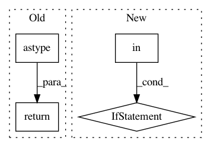

35a75a4fb59ba84e62d360dfdef2fcc2451c2343,open_seq2seq/data/speech2text/speech_utils.py,,augment_audio_signal,#Any#Any#Any#,209
Before Change
signal_float += np.random.randn(signal_float.shape[0]) * \
10.0 ** (noise_level_db / 20.0)
return (normalize_signal(signal_float) * 32767.0).astype(np.int16)
def get_speech_features(signal, sample_freq, num_features, pad_to=8,
features_type="spectrogram",
After Change
)
// noise
if "noise_level_min" in augmentation and "noise_level_max" in augmentation:
noise_level_db = np.random.randint(low=augmentation["noise_level_min"],
high=augmentation["noise_level_max"])
signal_float += np.random.randn(signal_float.shape[0]) * \
10.0 ** (noise_level_db / 20.0)
return normalize_signal(signal_float)
def preemphasis(signal, coeff=0.97):
In pattern: SUPERPATTERN
Frequency: 3
Non-data size: 4
Instances
Project Name: NVIDIA/OpenSeq2Seq
Commit Name: 35a75a4fb59ba84e62d360dfdef2fcc2451c2343
Time: 2019-04-08
Author: vitaly.lavrukhin@gmail.com
File Name: open_seq2seq/data/speech2text/speech_utils.py
Class Name:
Method Name: augment_audio_signal
Project Name: keras-team/autokeras
Commit Name: 71432d1890209628e189edf04d7d623160943718
Time: 2019-12-18
Author: 33369174+Davidsirui@users.noreply.github.com
File Name: autokeras/hypermodel/preprocessor.py
Class Name: TextToNgramVector
Method Name: transform
Project Name: deepmipt/DeepPavlov
Commit Name: c672738b39c8f739551da0d88991a2fedfba3e14
Time: 2018-10-04
Author: puleon@mail.ru
File Name: deeppavlov/models/ranking/metrics.py
Class Name:
Method Name: recall_at_k